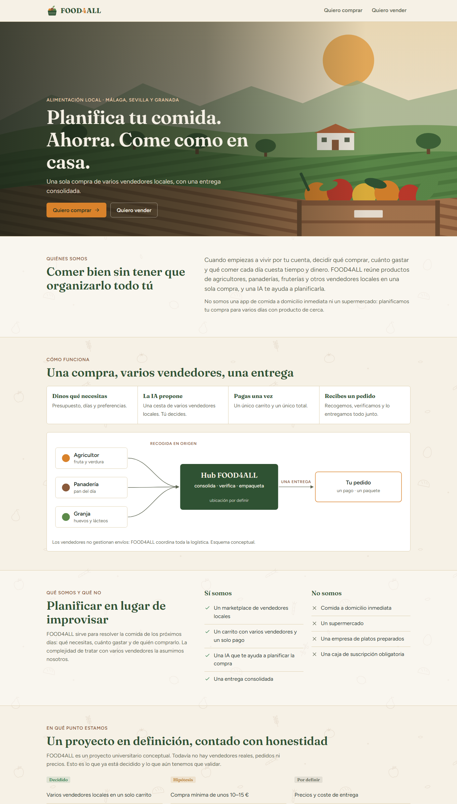
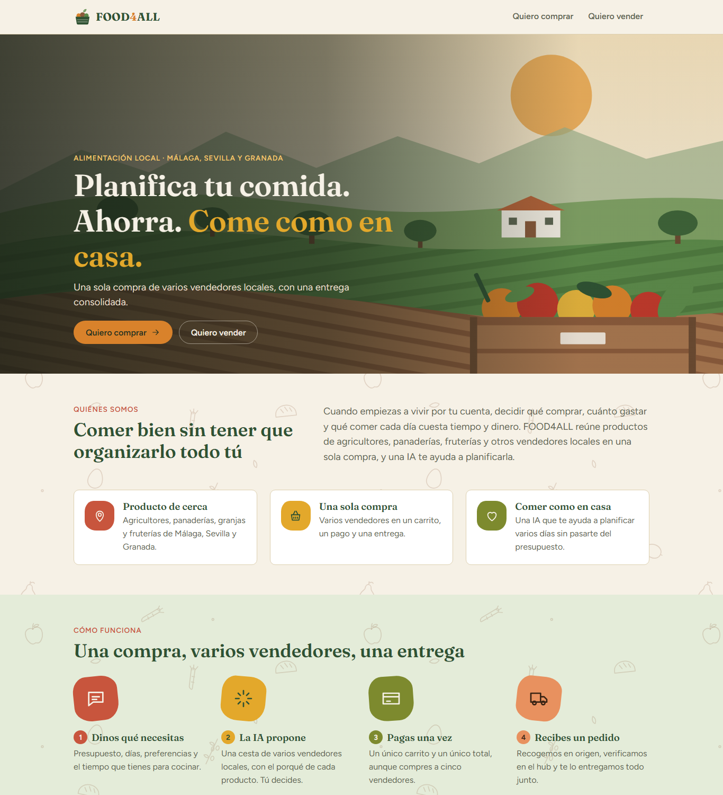
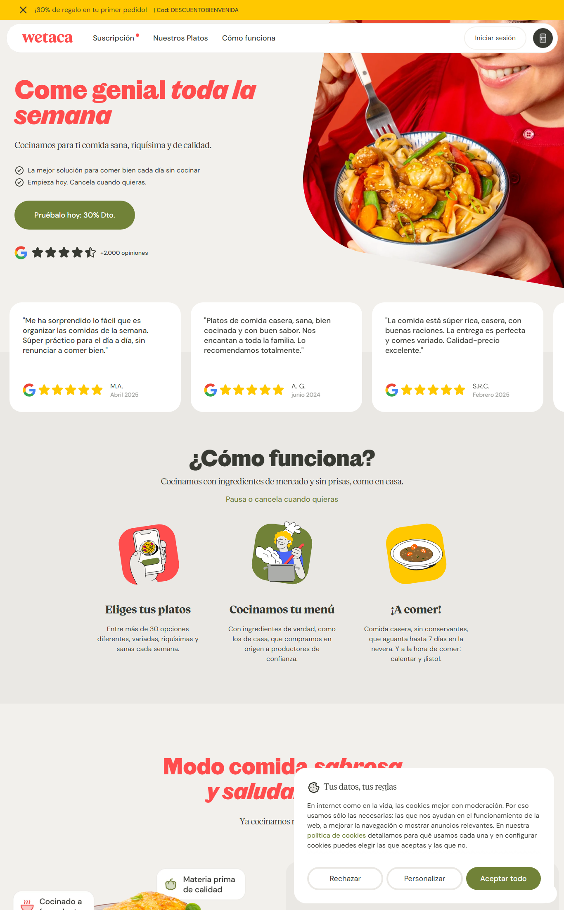
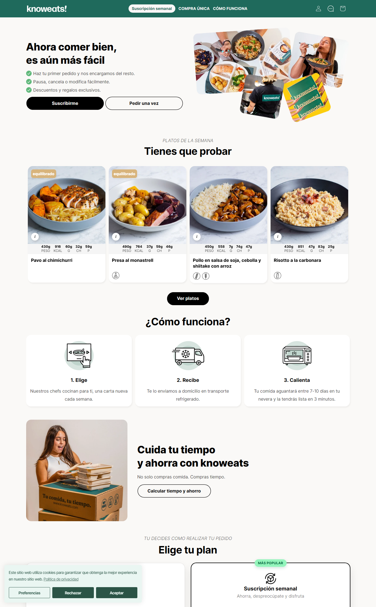
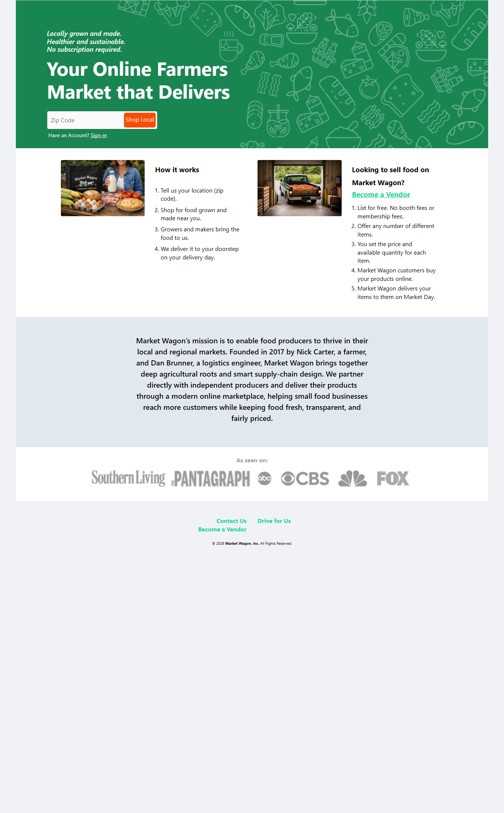
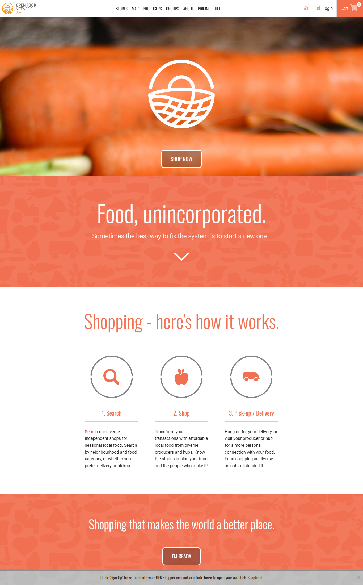
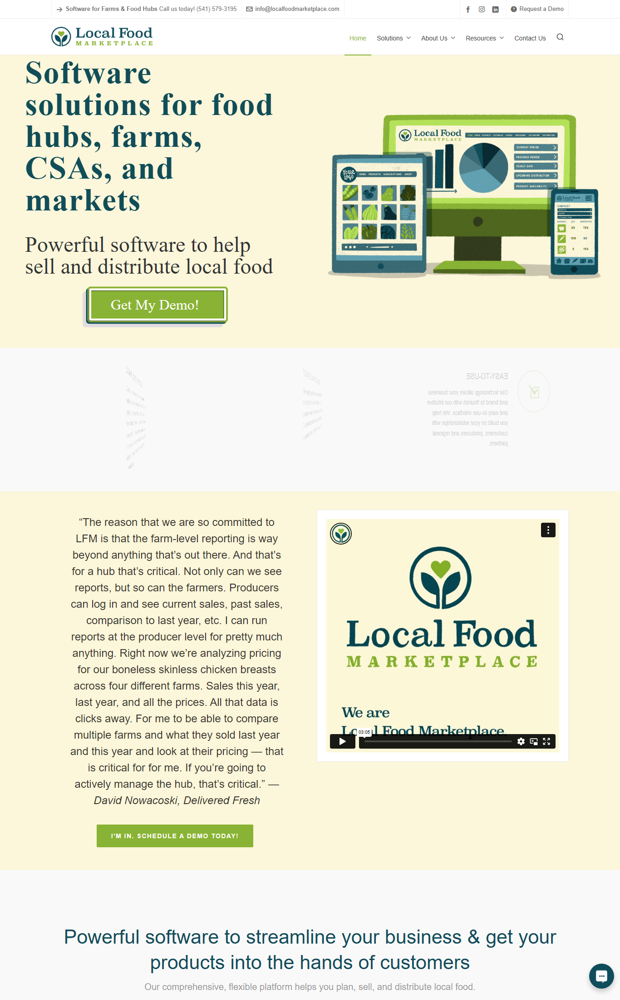
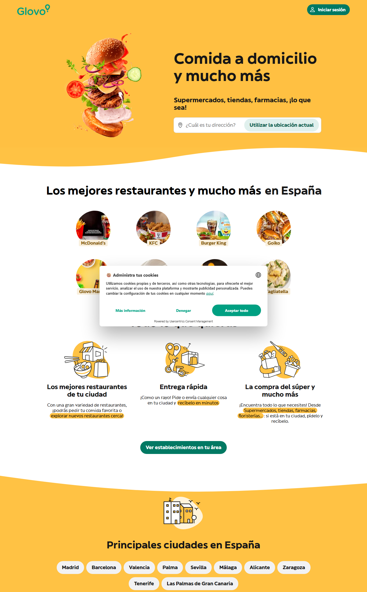
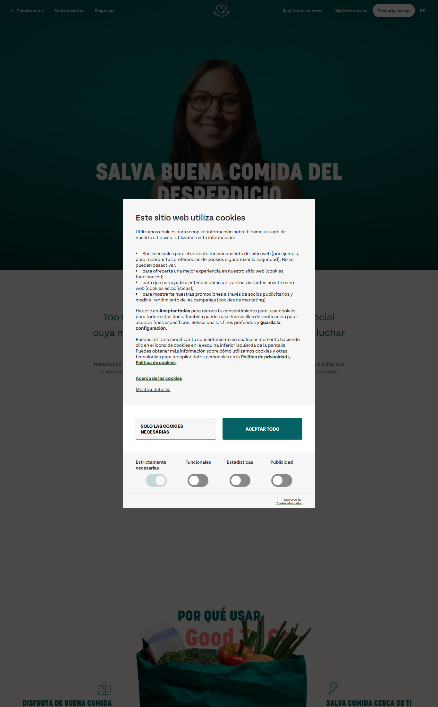

FOOD4ALL frente a la competencia
Parte superior de cada portada · capturas del 8 de octubre de 2026 a 1366 px

FOOD4ALL · antesCrema y verde, iconos finos

FOOD4ALL · despuésPaleta de mercado, bandas y manchas de color

WetacaRojo, mostaza y oliva; foto de plato

KnoweatsVerde azulado, fotos y fichas de plato

Market WagonVerde con dibujos de línea

Open Food NetworkCoral con siluetas de comida

Local Food MarketplaceCrema, lima y azul petróleo

GlovoAmarillo intenso y verde

Too Good To GoVerde azulado oscuro, foto